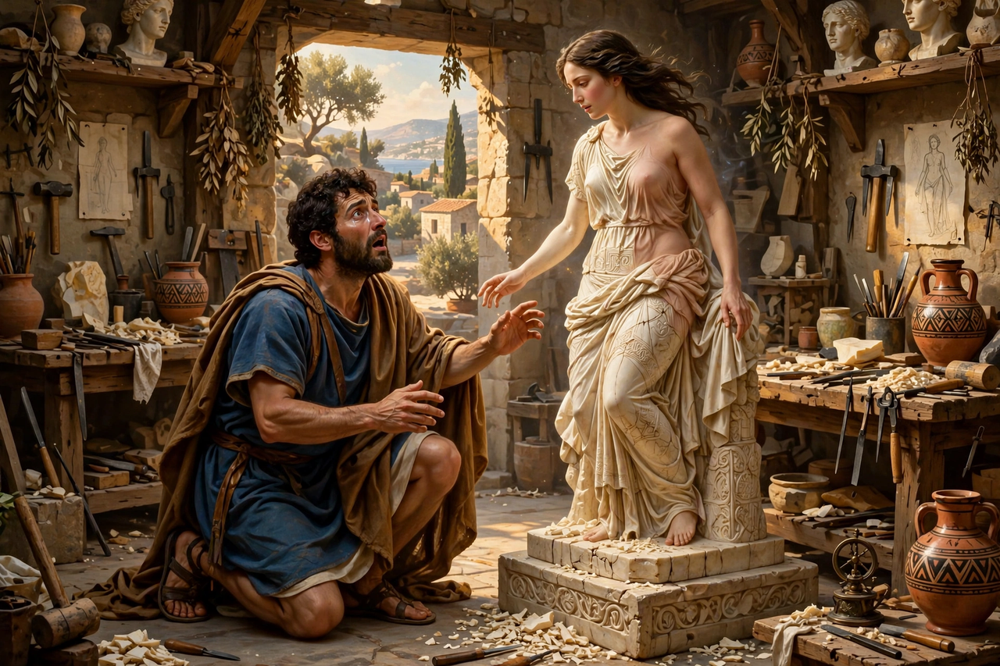

| Occupation | Sculptor-king of Cyprus |
|---|---|
| Spouse | Galatea (the animated statue) |
| Children | Paphos |
| Main source | Ovid, Metamorphoses Book 10 |

Pygmalion (Greek: Πυγμαλίων) was a legendary king and sculptor of Cyprus who fell in love with a statue he had carved and, by the grace of Aphrodite, saw it come to life. The story, best known from Ovid's Metamorphoses, has become a lasting archetype of the artist's desire for his creation.
Disgusted by the faults of women — in Ovid's telling, by the shameless Propoetides — Pygmalion lived celibate and carved from snow-white ivory a statue of ideal female beauty. He treated the figure as a living woman: dressing it, bringing it gifts, and laying it on a couch. At the festival of Aphrodite he prayed for a wife like his statue; the goddess understood his true wish and, when he returned home and embraced the figure, the ivory softened into flesh. Ovid does not name the bride; the name Galatea given to her in later tradition comes from post-classical retellings. Their child was Paphos, eponym of the Cypriot city sacred to Aphrodite.
The myth inspired George Bernard Shaw's play Pygmalion (1913), adapted as the musical My Fair Lady, and paintings by artists such as Jean-Léon Gérôme and Edward Burne-Jones. Psychologists named the "Pygmalion effect" — the phenomenon whereby higher expectations lead to improved performance — after him.
See also: Psyche · Venus de Milo · Botticelli